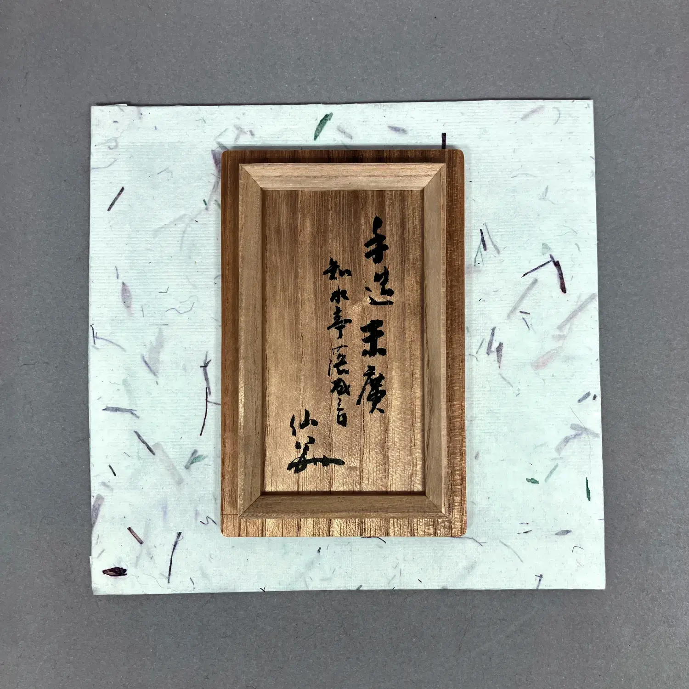
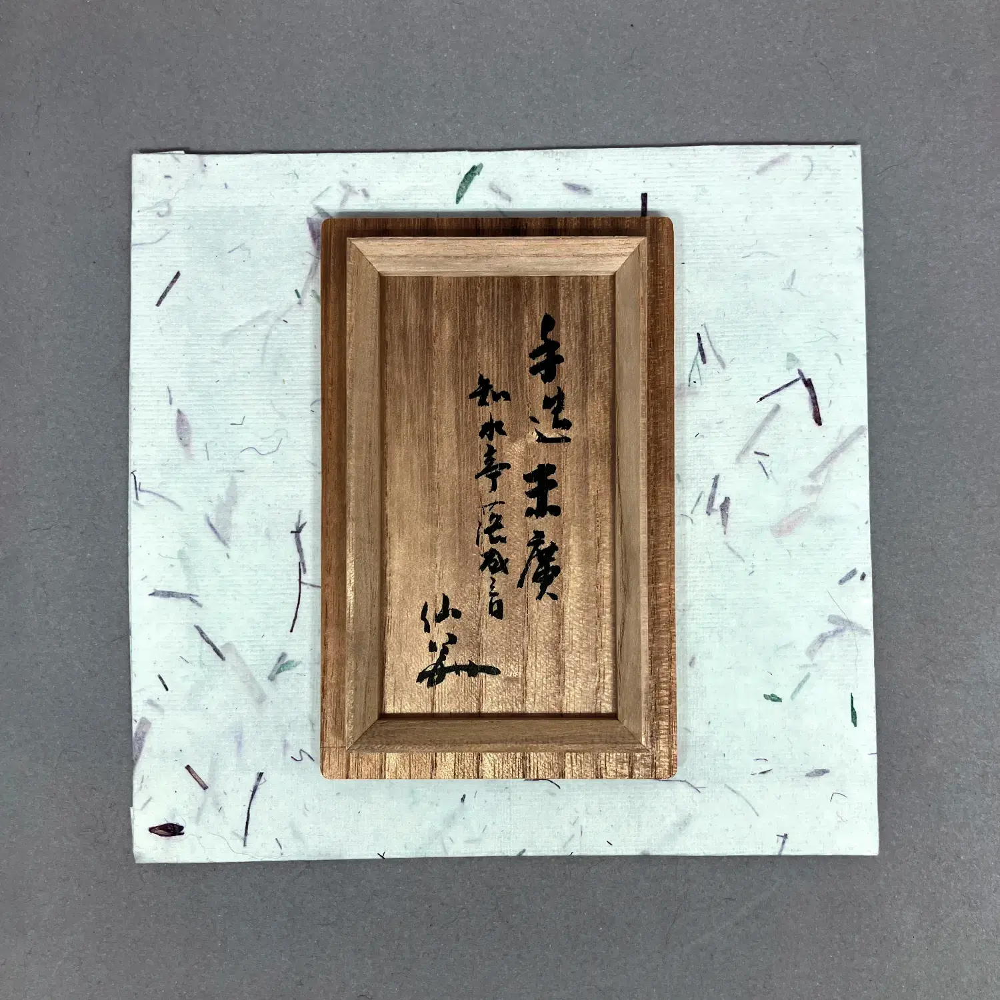
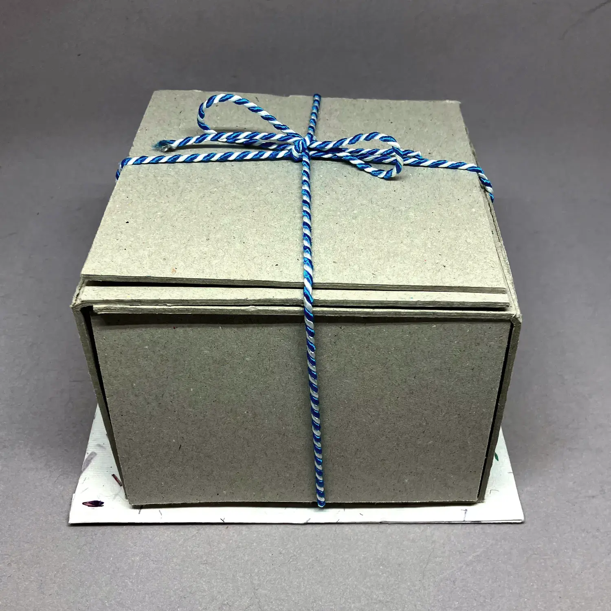
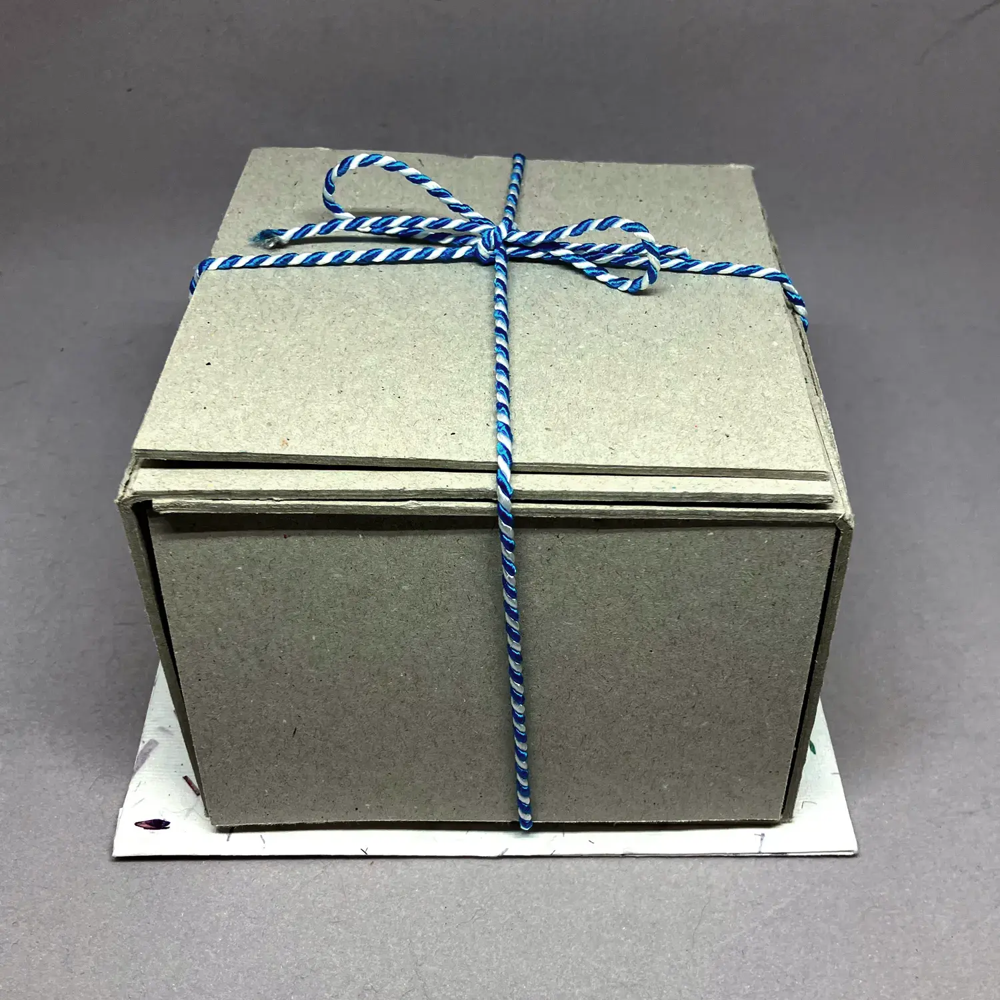

小春
作家不明 20 CHF


小春
晩秋には、日中は驚くほど暖かく、心地よい日がまだあります。湿気が少ないため空は晴れ渡り、気温も暖かく、木々の葉は非常に赤やオレンジ色に変わります。これらの小さな春は、美しい景色を見に出かけるよう誘います。森の色が変わる美しい景色を見に出かけるよう誘います。これは、（実際の）春の桜の花見と非常に似ています。お茶杓用の紙箱が付属しています。
掲載されている価格は、上記の道具のみを含んでいます。写真に写っている他の道具はサイズ比較や説明のためのものです。
購入 (茶杓, 価格： 20 スイスフラン) 閉じる
暦手
浅見与し三作 80 CHF


暦手
浅見与し三作この茶碗のスタイルは、伝統的に大晦日に使用されますが、誕生日や時間の経過を示す他の瞬間にも使用できます。その理由は、年間の12の月を表す歴手パターンにあります。
これは、京都の多作な清水焼アーティストによって作られ、木製と外側の紙箱が付属しています。
👾：このテキストは機械翻訳されました。不一致がある場合は、英語のページを参照してください。
掲載されている価格は、上記の道具のみを含んでいます。写真に写っている他の道具はサイズ比較や説明のためのものです。
購入 (茶碗, 価格： 80 スイスフラン) 閉じる
鉄瓶
作家不明 20 CHF


鉄瓶
私は骨董市で見つけた小さな鉄瓶を数年間茶箱と略盆の練習に使用していました。とても役に立ち、松かさの蓋が特別な魅力を加えています。ほとんど錆がないのですが、相当なチョークの結晶ができています。これは水の味に影響を与えず、実際には鉄を錆から守るのに役立ちますが、それでも一部の人々は好まないかもしれません⸺少しの酢で簡単に取り除くことができます。ご注文時に取り除いてほしい場合はコメントでお知らせください。再利用可能な紙箱付きです。
👾：このテキストは機械翻訳されました。不一致がある場合は、英語のページを参照してください。
掲載されている価格は、上記の道具のみを含んでいます。写真に写っている他の道具はサイズ比較や説明のためのものです。
購入 (水指, 価格： 20 スイスフラン) 閉じる
煮物碗
作家不明 30 CHF


煮物碗
懐石（かいせき）料理のメインディッシュは、軽く透明な出汁で煮込まれたものです。通常、季節の食材を繊細に盛り付けたもので、蒸した魚の団子や季節の野菜などがあります。必ずお椀で供されます。このコースは椀盛（わんもり）とも呼ばれ、碗（わん）を意味します。
これらのお椀は柿合せ（かきあわせ）スタイルで塗られており、木目が見えます。これは、2018年にrikyuchaで購入した、蓋付きの5つのお椀セットです。これを2回使用しました。これは漆塗りの圧縮木粉で作られており（ここで木目と見えるものはおそらく本物ではない）、
掲載されている価格は、上記の道具のみを含んでいます。写真に写っている他の道具はサイズ比較や説明のためのものです。
購入 (懐石, 価格： 30 スイスフラン) 閉じる
不識
鎗田和平作 180 CHF


不識
鎗田和平作ボーディダルマが中国の武帝に招かれたとき、皇帝は伝説の僧から知恵を得ようと期待していました。しかし、皇帝が彼に自分が誰であるか尋ねたとき、その答えは不識でした。これは、「知らない」という意味を持っているだけでなく、「気にしない」という意味も含んでおり、おそらく皇帝が聞きたかった答えではなかったでしょう。しかし、これは初期仏教の頑丈で妥協しない態度を示しており、この香炉もそれを表現しています。
アーティストは2014年に亡くなりましたが、数々の賞を受賞し、数回の展示会を開催していました。アーティストの箱付きです。
👾：このテキストは機械翻訳されました。不一致がある場合は、英語のページを参照してください。
掲載されている価格は、上記の道具のみを含んでいます。写真に写っている他の道具はサイズ比較や説明のためのものです。
購入 (お香, 価格： 180 スイスフラン) 閉じる
曙
國領寿人作 170 CHF


曙
國領寿人作オレンジ色に近い柔らかな赤い楽風の茶碗で、茶の湯に特に適している底の小さなくぼみがあります。作家はこれを「曙」と呼び、この茶碗を新年に特に適しているとしていますが、また、初心を感じる時にも適しています。
作家は茶道家でもあり、2020年に亡くなりました。数々の賞を受賞しています。
作家の箱が付属しており、その上には表千家 XII によって書かれたカリグラフィがあります。
👾：このテキストは機械翻訳されました。不一致がある場合は、英語のページを参照してください。
掲載されている価格は、上記の道具のみを含んでいます。写真に写っている他の道具はサイズ比較や説明のためのものです。
購入 (茶碗, 価格： 170 スイスフラン) 閉じる
夜桜
桜窯作 70 CHF


夜桜
桜窯作この茶碗は、釉薬が特に気に入っています：茶碗の一部が油滴のように見える箇所があり、あるいは詩的なイメージで言うと、桜の花びらのように、または夜桜のように、夜空に浮かんでいるようです。これは現代の薩摩焼ですが、古いスタイルにより近い作り方で、暗い土と暗い釉薬を使用しています。
👾：このテキストは機械翻訳されました。不一致がある場合は、英語のページを参照してください。
掲載されている価格は、上記の道具のみを含んでいます。写真に写っている他の道具はサイズ比較や説明のためのものです。
購入 (茶碗, 価格： 70 スイスフラン) 閉じる
帛紗
龍村美術織物公式作 60 CHF


帛紗
龍村美術織物公式作これは、通常、裏千家から茶銘に到達した際に送られてくる浄化布です。非常に強いシルクで作られており、その上には今日庵の銀杏柄が描かれています。日本のフリーマーケットで見つけました。再利用された紙箱が付属しています。
掲載されている価格は、上記の道具のみを含んでいます。写真に写っている他の道具はサイズ比較や説明のためのものです。
購入 (帛紗と古帛紗, 価格： 60 スイスフラン) 閉じる琵琶
加藤春鼎作 180 CHF


 

琵琶
加藤春鼎作琵琶（びわ）は、日本のリュートに似た楽器であり、しばしば憂鬱と結び付けられています。楽器を香炉として使用することは特に適しており、日本人は香を鑑賞するために文字通り「聞く」という言葉を使用しています。
これは、世界中で展覧会を開催し、数々の賞を受賞してきた家族のアーティストによって作られています。アーティストの箱と銘が付いています。
👾：このテキストは機械翻訳されました。不一致がある場合は、英語のページを参照してください。
掲載されている価格は、上記の道具のみを含んでいます。写真に写っている他の道具はサイズ比較や説明のためのものです。
購入 (お香, 価格： 180 スイスフラン) 閉じる
円窓山水紋
作家不明 20 CHF

円窓山水紋
このパターンの一般的なバリエーションは、赤い背景に黄色で表示されますが、このカラースキームでは、ラウンドウィンドウから見える複雑な景色がよりはっきりと見えます。紙箱付き。
掲載されている価格は、上記の道具のみを含んでいます。写真に写っている他の道具はサイズ比較や説明のためのものです。
購入 (帛紗と古帛紗, 価格： 20 スイスフラン) 閉じる
別星
作家不明 60 CHF


別星
This name alludes to 七夕 and the two starts Vega and Altair, representing two lovers that cannot be together. 小林一茶 wrote a poem about the sadness of their separation, saying: In this world, even the stars are separated. Naturally, it evokes a mood of autumn loneliness and melancholy. This tea scoop has a few dents near the tip; and also the cloth has a few stains. The scoop comes with a tube and paper box; the cloth with a cardboard box.
掲載されている価格は、上記の道具のみを含んでいます。写真に写っている他の道具はサイズ比較や説明のためのものです。
購入 (茶杓, 価格： 60 スイスフラン) 閉じる
薩摩焼茶碗
有山長太郎作 50 CHF


薩摩焼茶碗
有山長太郎作This 茶碗 is made by an artist who tries to improve the renown of 薩摩焼. Historically, ceramics from 薩摩 were a dignified black; but with time a garish style aimed at exports developed. It is made by a contemporary artist, but in the old style. I find it suitable when a 黒楽 tea bowl is just a little bit too heavy. Comes with the artist's box.
この茶碗は、薩摩焼の名声を高めようとするアーティストによって作られました。歴史的には薩摩の陶器は品位ある黒でしたが、時間とともに輸出向けの派手なスタイルが発展しました。現代のアーティストによって作られていますが、古いスタイルで作られています。私は、黒楽の茶碗が少し重すぎるときに適していると考えています。アーティストの箱付きです。
👾：このテキストは機械翻訳されました。不一致がある場合は、英語のページを参照してください。掲載されている価格は、上記の道具のみを含んでいます。写真に写っている他の道具はサイズ比較や説明のためのものです。
購入 (茶碗, 価格： 50 スイスフラン) 閉じる
無感情
岡田三郎作 160 CHF


無感情
岡田三郎作学生が尋ねました。和尚 洞山良价 に寒さや暑さへの対処法を尋ねました。洞山はこう答えました：「寒くもないし、暑くもない所へ行け」。しかし、この言葉は旅をすることを意味しているのではなく、茶道で使われる水柄（みずひしゃく）のようになることを指しています。水柄は茶釜が熱くても熱さを感じず、冷たい水をくむ時も震えません。それは心がないからです。季節を強く感じる時にこの水柄を使います。
製作者は成功した銀行経営者であり、日本茶道の実践者でもありました。彼は多くの茶柄や竹製の道具を彫りました。できるだけ古い寺院から入手した竹を使用しています。紙箱付きです。
掲載されている価格は、上記の道具のみを含んでいます。写真に写っている他の道具はサイズ比較や説明のためのものです。
購入 (茶杓, 価格： 160 スイスフラン) 閉じる
花散里
作家不明 60 CHF


花散里
この茶さじは煤けた竹から作られています。有名な源氏物語の第11章と同じ名前を共有しています：花散里、これは村に散らばる花々を意味します。この章では、源氏皇子が昔話をする雨の夏の午後を過ごし、橘と呼ばれる落ちた柑橘の花の香りを楽しんでいます。
この茶さじには同様の力と憂鬱さを見つけると思います。特に夏に適しており、紙箱入りです。
掲載されている価格は、上記の道具のみを含んでいます。写真に写っている他の道具はサイズ比較や説明のためのものです。
購入 (茶杓, 価格： 60 スイスフラン) 閉じる
ノートゥング
岡田三郎作 120 CHF


ノートゥング
岡田三郎作茶杓は茶道の剣と言われ、この茶杓は実際の剣にちなんで名付けられています⸺おそらく北欧のサガに登場する剣です。ワーグナーのオペラではNothungと呼ばれ、北欧神話ではGram、他のバージョンではBalmungとも呼ばれています。この剣はサガの主人公が受け継ぐ破片を再鍛造して新しい剣にし、それを使ってドラゴンを倒すことができる剣です。茶の湯では、再鍛造の側面が特に興味深く、この茶杓は特に10月に適していると思います。
この茶杓は、古い寺院の竹から茶杓を彫るのが好きだった日本の実業家によって彫られました。私が追加した竹の筒と名前と同様に、紙箱が付属しています。
大胆な名前と形を少し和らげるために、私は銀杏の模様がプリントされたピンクの帛紗と組み合わせています。この布は独自のダンボール箱が付属しています。
掲載されている価格は、上記の道具のみを含んでいます。写真に写っている他の道具はサイズ比較や説明のためのものです。
購入 (茶杓, 価格： 120 スイスフラン) 閉じる
早乙女
岡田三郎作 160 CHF


早乙女
岡田三郎作伝統的に、早乙女は、日本の稲作サイクルにおいて重要な早い夏に田んぼで稲を植える女性を指します。稲を植える行為は農業にとって重要なだけでなく、日本の農業遺産を称える文化的儀式や祭りに浸透しています。
この茶杓は初夏のイメージと本質を喚起し、土地と季節の循環との関連を反映しています。この選択は、稲作者の労働と献身を尊重し、人間の活動と自然のリズムとの調和した関係を強調しています。
製作者は成功した銀行経営者であり、日本茶道の実践者でもありました。彼は多くの茶杓や竹製の器具を彫りましたが、特に古い寺院から入手した竹を使用していました。茶杓には作者の筒と紙箱が付属しています。
掲載されている価格は、上記の道具のみを含んでいます。写真に写っている他の道具はサイズ比較や説明のためのものです。
購入 (茶杓, 価格： 160 スイスフラン) 閉じる
月の客
ニコ・チョリッチ作 20 CHF


月の客
ニコ・チョリッチ作これは、特に有名な勢多の茶杓に似た大きな茶碗に合わせて彫った茶杓です。勢多茶杓は、利休が彼の弟子の大きな水海茶碗に合わせて彫ったものと同様です。
月の客は、月を見つめる人、あるいはもっと率直に言えば、月を見つめる人を指します。これは、芭蕉の弟子である去来の詩から来ています。岩鼻やここにもひとり—月の客。ここ岩鼻でも誰かが月を見つめています。これは秋の夜を思わせるものであり、月の客が誰なのかは解釈の余地があります。著者なのか、他の誰かなのか。
この茶杓に合わせる布は、月の冷たい優雅さに合っていますが、残念ながら少しシミがあります。茶杓は紙箱に入っています。
掲載されている価格は、上記の道具のみを含んでいます。写真に写っている他の道具はサイズ比較や説明のためのものです。
購入 (茶杓, 価格： 20 スイスフラン) 閉じる
初笑
作家不明 20 CHF


初笑
1月は最初の月です：初夢、初釜、そして書初などが有名ですが、初笑など、他にも重要なことがたくさんあります。年の最初の笑いです。したがって、1月のお茶のスクープは良いものであり、濃茶の厳かなムードに軽さをもたらします。
紙箱付き。
掲載されている価格は、上記の道具のみを含んでいます。写真に写っている他の道具はサイズ比較や説明のためのものです。
購入 (茶杓, 価格： 20 スイスフラン) 閉じる
万雷
作家不明 70 CHF


万雷
この筒型の茶碗は、今は閉店している京都の萬珠堂で購入しました。その形状は冬に使用するのに適しており、その名前万雷は、外で嵐が迫っている中、温かいお茶を楽しむように誘います。
この嵐のテーマをサポートするため、この茶碗には帛紗と呼ばれる瑞鶴を組み合わせています。これは鵬雲斎に好まれています。この布のシルクは非常に堅く、再利用された紙箱に入っています。
👾：このテキストは機械翻訳されました。不一致がある場合は、英語のページを参照してください。
掲載されている価格は、上記の道具のみを含んでいます。写真に写っている他の道具はサイズ比較や説明のためのものです。
購入 (茶碗, 価格： 70 スイスフラン) 閉じる
鉄台十能
作家不明 60 CHF


鉄台十能
燃える炭を運ぶのに使用し、未点火のものをガスストーブで着火するために使用します。頻繁に使用されていますが、良好な状態です。元々rikyuchaで購入されました。ダンボール箱が付属しています。
掲載されている価格は、上記の道具のみを含んでいます。写真に写っている他の道具はサイズ比較や説明のためのものです。
購入 (水指, 価格： 60 スイスフラン) 閉じる
静寂
ビーアトリクス・カースタン作 170 CHF


静寂
ビーアトリクス・カースタン作これは、2023年に亡くなったドイツの陶芸家、ベアトリクス・シュテルム＝ケルスタンの茶碗です。彼女は、ドイツの粘土でほぼ20年間、お茶用の茶碗を作っていました。その色は、何も動かず静かな海底を思わせるので、私はそれに静寂と名前を付けました。再利用された紙箱に入っています。
この素晴らしいアーティストを記念して、紋章の入った帛紗をプレゼンテーションに添えています。絹には独自の紙箱が付属しています。
👾：このテキストは機械翻訳されました。不一致がある場合は、英語のページを参照してください。
掲載されている価格は、上記の道具のみを含んでいます。写真に写っている他の道具はサイズ比較や説明のためのものです。
購入 (茶碗, 価格： 170 スイスフラン) 閉じる
福笑
作家不明 270 CHF

 

福笑
このシンプルな萩焼茶碗の淡いピンク色は、1月に伝統的に食べられる葩餅を思い起こさせます。そのため、私はそれを福笑と名付けました。新年のはじまりにも使われます。
茶碗は輸送中に壊れたため、ウルスラ・カスパーさんがスイスで伝統的な銀継を使って修理しました。ドイツ語では「Scherben bringen Glück」⸺ 福笑の「福」は「good luck」を意味するため、名前がよく選ばれたことがわかります。段ボール箱に入っています。
👾：このテキストは機械翻訳されました。不一致がある場合は、英語のページを参照してください。
掲載されている価格は、上記の道具のみを含んでいます。写真に写っている他の道具はサイズ比較や説明のためのものです。
購入 (茶碗, 価格： 270 スイスフラン) 閉じる
引出黒茶碗
桂窯作 280 CHF


引出黒茶碗
桂窯作この黒茶碗の釉薬は特別で光沢のある黒です。これは、輝く熱い茶碗が窯から素早く取り出され、即座に冷却されるという引き出しという技術の結果です。その結果、この漆黒の釉薬が生まれます。
👾：このテキストは機械翻訳されました。不一致がある場合は、英語のページを参照してください。
掲載されている価格は、上記の道具のみを含んでいます。写真に写っている他の道具はサイズ比較や説明のためのものです。
購入 (茶碗, 価格： 280 スイスフラン) 閉じる
森林浴
作家不明 20 CHF


森林浴
これは、ノードの近くや底辺に興味深いディテールがある、シンプルな竹製の茶さじです。森林の中を散歩しているようなさわやかで優雅な感じがします。その名前、森林浴は、直訳するとforest bathing、あるいはより科学的にはsilvicotherapyとなります。人々は昔から森林の静かな静寂を楽しんできましたが、この用語は1980年代に人々が自然と再つながりしようとする動きから人気を集めました。
この視点からは、自然を楽しむ単純な意味だけでなく、人類が自然に与えた損害を取り消すための事業的欲望や奮闘も見つけることができます。紙箱付き。
掲載されている価格は、上記の道具のみを含んでいます。写真に写っている他の道具はサイズ比較や説明のためのものです。
購入 (茶杓, 価格： 20 スイスフラン) 閉じる
空蝉
岡田三郎作 100 CHF


空蝉
岡田三郎作名前はいくつかの方法で駄洒落です：まず第一に、セミの殻そのものがかなり詩的なシンボルです。成長するために以前の自分を捨てる必要があります。しかし、これは源氏物語の登場人物の名前でもあります；美しいとは限らないが、立派な態度と洗練された趣味で源氏を感心させた女性です。私の意見では、この側面はこの茶杓のシンプルでありながらエレガントな作りに合っています。
最後に、しかし、空蝉という言葉自体も興味深いです。通常、これはセミの殻ではなく、生き物一般を意味します。これは、この言葉を書くために使用された文字が意味ではなく音で追加されたためです。そして時間とともに、この言葉は空のセミの殻という意味も持つようになりました。
夏の強いモチーフである蝉を考えると、この茶杓は夏に最も適しているかもしれません；しかし、名前のより哲学的な解釈からすると、濃茶のために一年中使用することもできます。紙箱と竹筒が付属しています。竹筒は後から追加されましたが、茶杓の元の作成者によって作られたものではありません。
この作成者は成功した銀行経営者であり、日本茶道の実践者でもありました。彼は多くの茶杓や竹製の器具を彫り、古い寺院から入手した竹を好んで使用しました。
掲載されている価格は、上記の道具のみを含んでいます。写真に写っている他の道具はサイズ比較や説明のためのものです。
購入 (茶杓, 価格： 100 スイスフラン) 閉じる
晚課
作家不明 100 CHF


晚課
これは末広のある茶さじで、したがって一部の高等な準備にのみ正規に使用されます。その名前はそのような理由から適しています：お経の夕べの唱えの間、僧侶たちは一日中に蓄積した形而上的な塵を清める；まるで茶さじがお茶である形而上的な塵を清められるかのように。
それは異例の布と組み合わされています：60年代にチューリッヒの企業Mavirがスイス航空のファーストクラスのフライト用に製造した布ナプキンです。通常の古帛紗よりわずかに小さく、再利用された古帛紗の段ボール箱と一緒に納品されます。
掲載されている価格は、上記の道具のみを含んでいます。写真に写っている他の道具はサイズ比較や説明のためのものです。
購入 (茶杓, 価格： 100 スイスフラン) 閉じる
徳風
作家不明 180 CHF


徳風
このタイプの棗は玄々斎によって開発され、非常に意味が込められています。上部には彼の書道による「一粒万倍」という言葉があり、これは一つの種が最終的に大きな収穫を生み出すことを意味しています。したがって、この棗は秋の収穫期に使用するのに非常に適しています。
しかしながら、その意味は単なる季節性以上のものです。名前の「徳風」は儒教の教えに由来しており、小さな人は草のようであり、偉大な人はそれを曲げる徳風のようであると示しており、偉大な人々の目的は徳を行い、それによって小さな人々を形作ることであることを意味しています。
これは元の茶筒の写です。底部に小さなひびがあり、段ボール箱に入っています。
👾：このテキストは機械翻訳されました。不一致がある場合は、英語のページを参照してください。
掲載されている価格は、上記の道具のみを含んでいます。写真に写っている他の道具はサイズ比較や説明のためのものです。
購入 (茶器, 価格： 180 スイスフラン) 閉じる
盃
作家不明 60 CHF


盃
茶道の前の食事中には、お酒も出されます。通常、お酒は陶器のカップから飲まれますが、茶会ではより儀式的な形で出されます：浅い盃（sakazuki 盃）、実際にはカップよりもプレートのようなもので、わずか数回の小さな口当たりの液体を含むものです。このようにお酒を出すと、とても貴重に感じられます。
セットには、5つの個々のカップ用の盃台（sakazuki dai 盃台）が付属しています。2018年にrikyuchaで購入したこのセットは、2回使用しました。ラッカー塗りの圧縮木粉から作られており、盃台とカップには紙箱が付属しています。
掲載されている価格は、上記の道具のみを含んでいます。写真に写っている他の道具はサイズ比較や説明のためのものです。
購入 (懐石, 価格： 60 スイスフラン) 閉じる